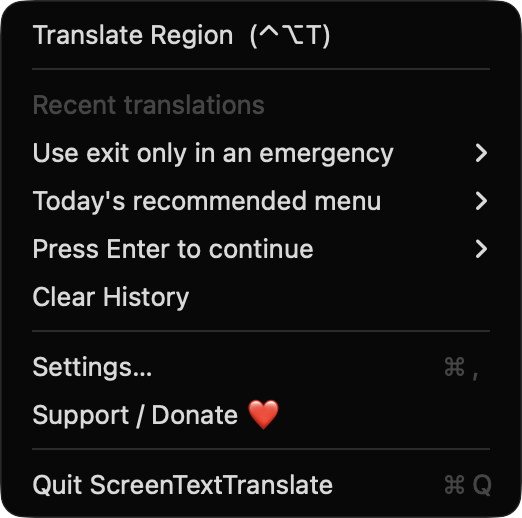
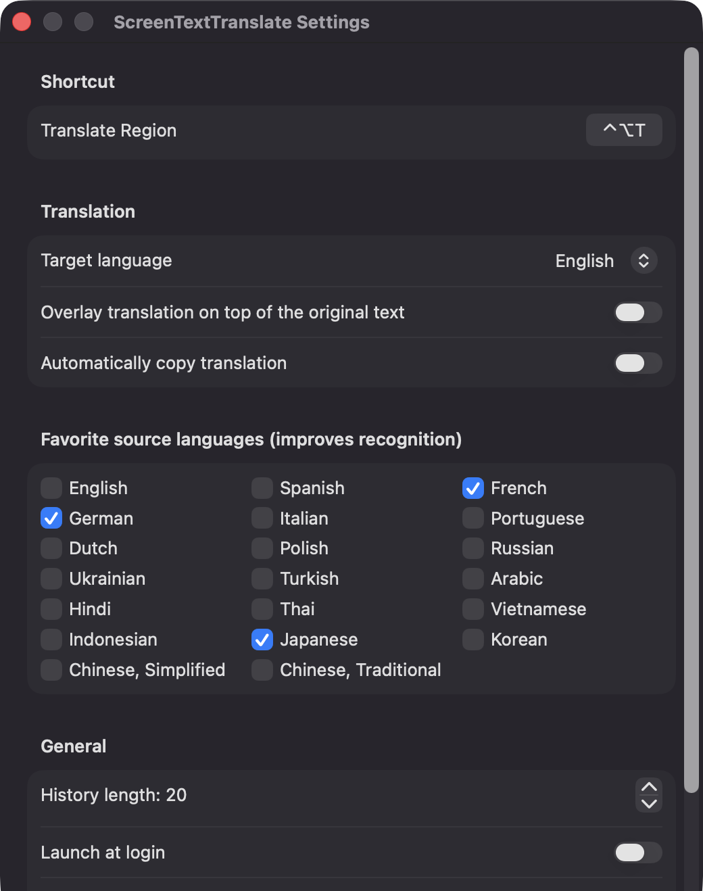
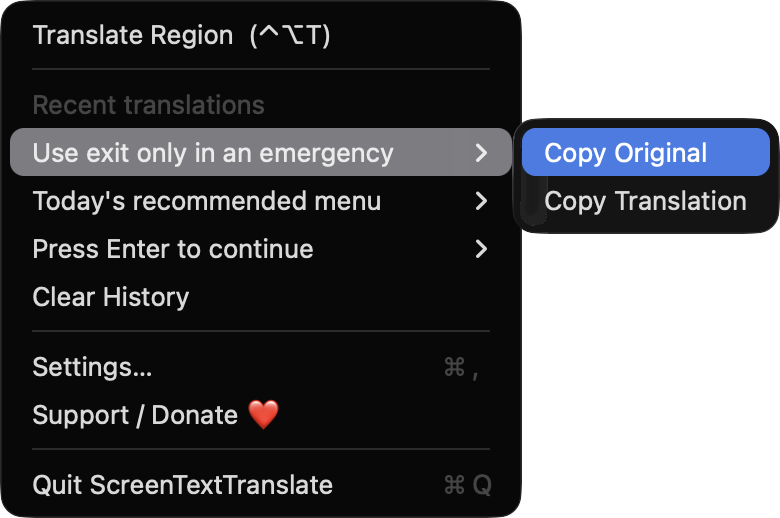

Global hotkey capture
Start a capture from anywhere with Control-Option-T, or re-record the shortcut in Settings. Press Esc at any time to cancel.
Open source · macOS 14+ · Universal binary · Screen & OCR
Press Control-Option-T, drag over any text on screen, and a floating card shows the translation. Recognition and translation both run on your Mac.
Free & MIT licensed · Apple Silicon & Intel · Latest release

Features
Videos, games, images, PDFs and apps: if it's on screen, ScreenTextTranslate can read it.
Start a capture from anywhere with Control-Option-T, or re-record the shortcut in Settings. Press Esc at any time to cancel.
Apple's Vision framework reads the text, retries rotated to catch vertical lines, and NaturalLanguage detects the source language. Favorite source languages improve recognition.
See the original, the translation and a target-language popup next to your selection. Copy either text, or press Esc to dismiss.
Paint the translated lines directly over a snapshot of the original region. Overlay mode requires macOS 15 or later.
Recent translations stay in the menu, from 5 to 100 entries, with copy actions for the original and the translation. Turn on auto-copy to skip the extra click.
No network calls, analytics or third-party dependencies. Captured images are processed in memory and never saved or sent anywhere.
Screenshots


Install
ScreenTextTranslate is open source and not notarized with a paid Apple Developer ID, so macOS needs one extra step the first time.
xattr -cr /Applications/ScreenTextTranslate.app
Download
Free, forever. Built for macOS 14 Sonoma or newer, Apple Silicon and Intel.
Not notarized: on first launch right-click ScreenTextTranslate.app → Open.
FAQ
Yes. It is released under the MIT license, and the full source is on GitHub. There are no accounts, subscriptions or API keys, and an optional Support button links to Ko-fi.
Screen Recording is required so the app can capture the region you select. Launch at login is optional and only used if you enable it. It does not request Accessibility or Microphone access, and the hotkey needs no permission.
Settings are stored in the app's preferences, and your recent translations are kept in a small JSON file in Application Support on your Mac. Captured images are processed in memory and are not saved to disk or sent anywhere.
Notarization requires a paid Apple Developer account, and this is a free project. Right-click the app and choose Open once to get past Gatekeeper, or build it yourself from source with Xcode.
Yes. ScreenTextTranslate was generated by Claude Code from a written spec as a clean-room reimplementation, with no code or assets from any commercial app. The full source is on GitHub under MIT, so you can read every line before you run it. It has had less human review than a hand-written app, so bug reports are welcome.
Support ❤️
ScreenTextTranslate is a free, open-source alternative to paid utilities. If it earns a spot on your Mac, a coffee keeps the updates coming.
☕ Support Or on Ko-fi